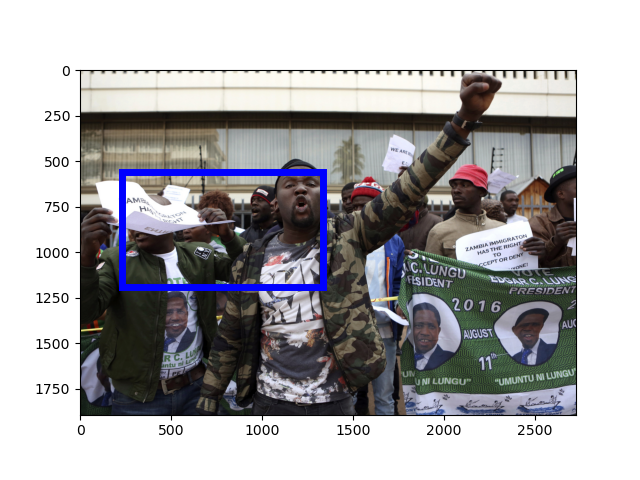

[Raw Text]: FILE - Supporters of Zambian President Edgar Lungu react while supporters of Zambia's opposition leader, Hakainde Hichilema, picket alongside Democratic Alliance (DA) members outside the High Commission of Zambia, in Pretoria, South Africa, Friday May 26, 2017.
======================================================================
Mention: http://www.isi.edu/gaia/entities/uiuc/VOA_EN_NW_2017_06_14_3900403_0/EN_Entity_EDL_0000407
---- VOA_EN_NW_2017_06_14_3900403_0:105-122 FILE - Supporters of Zambian President Edgar Lungu react while supporters of Zambia ' s opposition leader , Hakainde Hichilema , picket alongside Democratic Alliance ( DA ) members outside the High Commission of Zambia , in Pretoria , South Africa , Friday May 26 , 2017 .
---- VOA_EN_NW_2017_06_14_3900403_0:97-102 FILE - Supporters of Zambian President Edgar Lungu react while supporters of Zambia ' s opposition leader , Hakainde Hichilema , picket alongside Democratic Alliance ( DA ) members outside the High Commission of Zambia , in Pretoria , South Africa , Friday May 26 , 2017 .
Image:
GroundingConfidence: http://www.columbia.edu/AIDA/DVMM/Entities/GroundingBox/RUN00006/JPG/VOA_EN_NW_2017_06_14_3900403_0/3, 0.3583912
GroundingConfidence: http://www.columbia.edu/AIDA/DVMM/Entities/GroundingBox/RUN00006/JPG/VOA_EN_NW_2017_06_14_3900403_0/4, 0.3583912
Event:
======================================================================
Mention: http://www.isi.edu/gaia/entities/uiuc/VOA_EN_NW_2017_06_14_3900403_0/EN_Entity_EDL_0000120
---- VOA_EN_NW_2017_06_14_3900403_0:29-37 FILE - Supporters of Zambian President Edgar Lungu react while supporters of Zambia ' s opposition leader , Hakainde Hichilema , picket alongside Democratic Alliance ( DA ) members outside the High Commission of Zambia , in Pretoria , South Africa , Friday May 26 , 2017 .
---- VOA_EN_NW_2017_06_14_3900403_0:39-49 FILE - Supporters of Zambian President Edgar Lungu react while supporters of Zambia ' s opposition leader , Hakainde Hichilema , picket alongside Democratic Alliance ( DA ) members outside the High Commission of Zambia , in Pretoria , South Africa , Friday May 26 , 2017 .
Image:
GroundingConfidence: http://www.columbia.edu/AIDA/DVMM/Entities/GroundingBox/RUN00006/JPG/VOA_EN_NW_2017_06_14_3900403_0/1, 0.4574103
GroundingConfidence: http://www.columbia.edu/AIDA/DVMM/Entities/GroundingBox/RUN00006/JPG/VOA_EN_NW_2017_06_14_3900403_0/2, 0.4539258

Event:
======================================================================
Mention: http://www.isi.edu/gaia/entities/uiuc/VOA_EN_NW_2017_06_14_3900403_0/EN_Entity_EDL_0000410
---- VOA_EN_NW_2017_06_14_3900403_0:63-72 FILE - Supporters of Zambian President Edgar Lungu react while supporters of Zambia ' s opposition leader , Hakainde Hichilema , picket alongside Democratic Alliance ( DA ) members outside the High Commission of Zambia , in Pretoria , South Africa , Friday May 26 , 2017 .
Image:
GroundingConfidence: http://www.columbia.edu/AIDA/DVMM/Entities/GroundingBox/RUN00006/JPG/VOA_EN_NW_2017_06_14_3900403_0/6, 0.6381013

GroundingConfidence: http://www.columbia.edu/AIDA/DVMM/Entities/GroundingBox/RUN00006/JPG/VOA_EN_NW_2017_06_14_3900403_0/5, 0.6381013
Event:
======================================================================
Mention: http://www.isi.edu/gaia/entities/uiuc/VOA_EN_NW_2017_06_14_3900403_0/EN_Entity_EDL_0000409
---- VOA_EN_NW_2017_06_14_3900403_0:7-16 FILE - Supporters of Zambian President Edgar Lungu react while supporters of Zambia ' s opposition leader , Hakainde Hichilema , picket alongside Democratic Alliance ( DA ) members outside the High Commission of Zambia , in Pretoria , South Africa , Friday May 26 , 2017 .
Image:
GroundingConfidence: http://www.columbia.edu/AIDA/DVMM/Entities/GroundingBox/RUN00006/JPG/VOA_EN_NW_2017_06_14_3900403_0/7, 0.6971171
GroundingConfidence: http://www.columbia.edu/AIDA/DVMM/Entities/GroundingBox/RUN00006/JPG/VOA_EN_NW_2017_06_14_3900403_0/8, 0.6971171

Event:
======================================================================